1776 Labs 24-Hour Challenge · Tennessee
The status quo
A family that lost its income may need to apply to unemployment, FEMA, a disaster loan, food assistance, and rent and utility help.
Each one is its own application, on its own site, with its own rules.
The same questions.
Again, and again.
The root of the problem
people applied for FEMA disaster assistance in 2016 to 2018.
Officials told GAO that survivors “did not understand and were frustrated by” one step, the SBA loan requirement.
Source: GAO-20-503, Sept. 30, 2020
The change
Built to be trusted
The outcome · Live demo
Switch to the live app
The impact
Families get the ear.
Responders get the eye.
Next